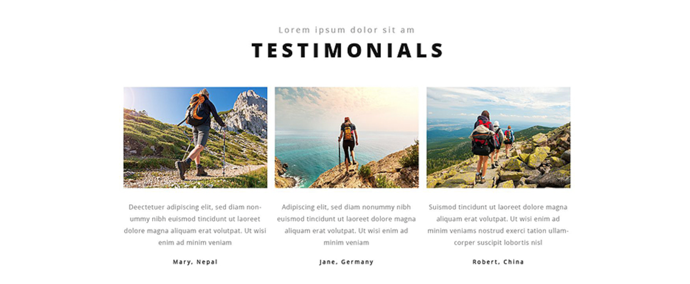

Selena Vargas
Project 1: Building A Library
Biography
​I'm the mind behind the peace that I wish to bring to the world of technology. Currently a Web Development/Design student attending Full Sail University during the day and a music lover during the night. My love for web designing took it's course in high school, once receiving my Diploma in May of 2014, I enrolled right after for the Fall semester into Full Sail to continue this technological passion. Currently I am working to collaberate with my fellow colleagues in Full Sail to enhance my skills on not only web designing but also graphic designing as well as music production. I love to continue to expand my knowledge through every industry rather than just one. I have so much pride and heart for taking nothing and creating it to something beautiful for my clients. Your vision becomes my passion. When I'm not studying you'll most likely always find me creating music. My other biggest passion that I hold is my love for the art of music. It's a great way to end my days and help me to maintain my mind at peace to spread onto my work. Although when I'm not making music I love to be around my family and spread the peace onto them as well. They're my reasonings for carrying all the passions that I do with so much pride. I vow to always represent not only my passion and dedication but yours as well into the work I create for you, my future clients.
Contact - Combadi
Target Audience:
The target audience for this website I believe aims towards the ages 13-40. The whole site is about signing up for volunteering all around the world. This site seems to want to get people of all ages involved more into what is going on in their own community from volunteering in Europe to volunteering in your local neighborhood.
Client/User Needs
The client's goal is to recruit users to help volunteer more and more all around the world. People will come to this site and realize they can participate in events all over the world that they didn't even know about. The users who come to this site will find that in just a click they can attend an event in Europe as easily as they could attend an event down their street. The user can visit this site in hopes to make a difference in the world and be apart of something more.
Critique
The site chooses to make it clear that they are willing to have new people volunteer with them as much as possible. They're very open to recruiting new people along their journey's so they make it very easily for others to get in touch with them to gather more information and or to join them.
News Feed - YouTube
Target Audience:
The target audience for this website is to get viewers to view the latest music and music videos of today. I believe the viewers that they aim for are between the ages of 14-24 that would currently be alert to today's modern music and pop culture.
Client/User Needs
The client is aiming to keep viewers coming back by all of the latest videos that are being uploaded daily. They want users to always be urged to return to their site and stay interested into the website. By doing so it satisfies the users needs to want to be entertained and kept up to date on what has recently been happening in the pop culture world.
Critique
Youtube contains a great news feed that allows me to see videos I would personally be interested in due to have the recommended feature. Their layout of videos has great padding between all of them to draw attention to not only one but multiple videos. The font makes it easy to see which video is which and the layout is gridded nicely to not lose focus as to what is the main purpose here.
Footer - RonnieBanks.com
Target Audience:
The target audience of this website I believe is aimed towards young teens between the ages of 12-18. The footer holds all of Ronnie Bank's social media which the social media contained is usually obtained by more young teens than any other viewers.
Client/User Needs
The client I believe wanted to make this footer hold all of the social media contacts to allow users to stay in touch with Ronnie Banks and all of his latest events. She also made the footer to acknowledge users that she herself created this web page for Mr. Banks. The user can easily click a link and be at first hand access to follow Ronnie Banks on all of his daily journey's.
Critique
I personally love the black and white layout this website has. The font along with the layout makes it perfectly clear to read and the font choice personally makes it lovely to click to see more about Ronnie Banks. The padding done between all of the context as well makes the footer as a whole very appealing to the eye. It makes it clear what the purpose is once you hit the bottom of the page.
About - JColeMusic.com

Target Audience:
The target audience of this website I believe aims towards users who personally love J.Cole as an artist. This section clearly states a small biography about J.Cole to pull users more into his life and how he came about.
Client/User Needs
The client's goal for this website is to inform J.Cole's followers and fans as to what his music and he himself is more about. The user takes away more of an insight about J.Cole from simply reading this section. It satisfies the user's curious mind as to what more they wanted to know about their beloved artist.
Critique
The way the about section has a left margin to it away from J.Cole's picture made the section more appealing. Not to mention allows the user to read clearly and makes the writing look less for the read to want to read the section more.
Header - IMDB.com
Target Audience:
The target audience for this website aims towards users who are interested in finding out more information towards any movie they choose too. Safe to say this site is widely friendly to movie lovers.
Client/User Needs
This site gives users the latest info on casts, release dates, and trailers of the now, upcoming, and past movies released in a range of years. The client's goal was to satisfy a user towards making their decision easier as to what movie to see. The user that comes to this site can get lost into the celebrity photos from the movies, current news, and even make it easier to find showtimes for that particular movie they wish to see.
Critique
The header of this website makes it pretty clear as to what this site is going to consist of which is a good causality to have. The colors being black and gold really make the header pop out from the navigation bar itself to make it clear this is where the functionalities of the website are going to take place.
CTA - Quality Monster Template
Target Audience:
The target audience for this website is aimed towards those who wish to get the absolute best quality of work there is to be done for whatever they may need.
Client/User Needs
The client made it clear that their website is all about the Quality of their work. The CTA tells me that they will provide work to their best of form to present to you as a user to have. By doing this the user automatically has it in their mind that this company will provide great quality and would get the urge to learn more about them and their work.
Critique
Personally the font and font size of the word "Quality" really stands out to me as a user, it intrigues me to want to learn more about them and what exactly it is that I want to be associated with them for. The center margin makes the CTA of the website standout as well as the background makes a great hosting spot for the CTA to make its silent impacted approach.
Login/Registration - Facebook
Target Audience:
The target audience for this website is for those who wish to gather a social media that makes it easy to sign up for and keep maintained. Not to mention also capture those who want to keep in touch with others who tend to use this site.
Client/User Needs
The client aimed to make this website easy to be apart of by making the sign up and login forms simple to manufacturer. The user doesn't have to go far to be apart of the big world on Facebook nor do he/she have to search for to login into their facebook and update it. The client makes it a nonthinking process for the user greatly which benefits the user in the end.
Critique
I believe the login forums are very well setup, the padding between the two boxes make it easy to identify which form is which for the user. The placeholders on top of the boxes for the registration forms make it easier to follow along and complete for the user greatly.
Navigation - HipHopEarly.com
Target Audience:
The target audience for this website I believe aims towards users who want to keep updated on the latest hip hop music.
Client/User Needs
The client aimed to make it easy for users to find exactly what they're looking for when it comes to their song of choice. By establishing the navigation bar with the latest news and hottest track of the months it allows the user to easily access the new music around.
Critique
Personally I love the orange and black combo that was chosen to be on this navigation bar. It gives the website more flavor to the user's eye. The icons as well used for the links represent what the link is really about which makes it easier as a user to understand where that link is going to lead me.
Features - Repair Monster Template
Target Audience:
The target audience for this website is aimed towards those who need assistance in repairing their comptuer.
Client/User Needs
The client made it to where this website shows all of the features that this company can offer to help the user repair their computer back to its proper functions and value. It satisfies the user needs by narrowing it down for them what feature they need to look for to fix.
Critique
Personally the circle themed with the icons inside makes it more appealing and clear to me what I should be looking out for that particular feature. It makes it easier to focus on and the icon draws my attention straight to the topic of that feature. The alignment of all of the themes makes the features easier to be read.
Blog - Hiking Monster Template
Target Audience:
The target audience for this website is for those who are interested into going on a hiking adventure.
Client/User Needs
The client made it to where the hikers can easily make a testimony on their time hiking to make it more appealing for others to do as well. By doing this it allows the user to take more interest into hiking with this company as well.
Critique
Personally I love the layout of all the photos they added as well to make the blog pop out more. Putting the location of the pictures as well gives the user a better visual of where the hiking adventures take place.